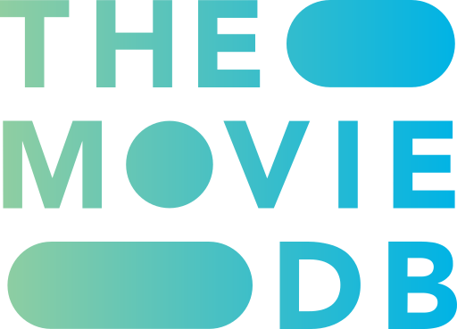

About
Listick keeps track of what you watch: movies, shows and anime. It’s open source (AGPL-3.0) and self-hosted: this copy, its data and its API keys belong to whoever runs it.
Credits

This product uses the TMDB API but is not endorsed or certified by TMDB.
- Streaming services from JustWatch, through TMDB.
- Anime from Kitsu, linked by Fribb/anime-lists.
- Air times from TVmaze.
- New disc releases from Blu-ray.com's RSS feed.
- Anime scores and rankings from MyAnimeList.
- IMDb, Rotten Tomatoes and Metacritic scores from OMDb; not endorsed by IMDb.
- Metadata provided by TheTVDB.
- Weather by Open-Meteo.